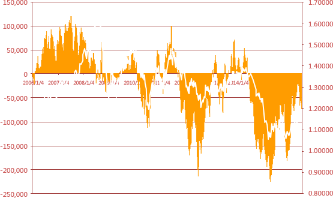
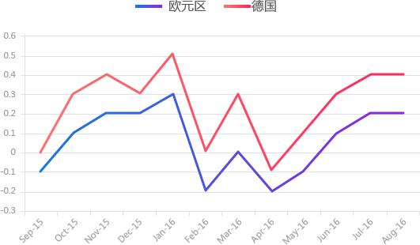
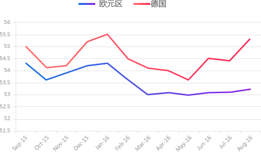

-
伦老师陪你玩转欧银夜
-
德拉基 欧央行行长，偏鸽派
量化宽松将持续直到通胀实现可持续的调整；在设计QE项目上欧洲央行具有灵活性，但目前欧洲央行也尚未讨论缩减QE；英国脱欧并未造成重大影响，有数据显示第二季度经济继续增长，但是欧元区第二季度经济增速可能较一季度疲弱
-
魏德曼 德国央行行长，鹰派
欧洲央行有可能调整债券购买计划。如果欧洲央行增加购买高负债或低信誉国家的公债，将使欧洲央行进一步偏离核心职责,英国公投脱欧的结果并未对欧元区经济展望造成根本性改变，这将威胁欧央行的独立性
分析师解读：欧央行行长德拉基的讲话始终偏鸽派，他在讲话中保留了欧央行调整量化宽松购债计划的可能性；德国央行行长魏德曼的讲话令人意外，作为传统的鹰派代表，他通常反对宽松，但最新讲话中他令人意外的表示欧央行存在调整购债计划的可能性，这极大地增强了欧央行在9月利率决议延长量化宽松购债计划期限的可能性，这将打压欧元的表现。
-
客户持仓报告
- 美元日元
- 澳元美元
- 美元人民币
- 纽元美元
- 英镑美元
- 美元加元
- 欧元美元
- 美元瑞郎
-
CFTC持仓报告
货币对 净头寸 净头寸变化 未平仓合约 较上周变化 欧元/美元 -81925 -5267 364843 799
分析师解读：金道客户持仓数据显示客户持有净多头，多头与空头比例为54.2%：45.8%，这暗示短期趋势可能偏下行，下方关键支撑依然位于前几日低点附近的1.1120
-
CPI对比
-
综合PMI对比
分析师解读：德国经济依然好于欧元区整体表现。欧元区以及德国8月PMI并未出现下滑，暗示英国退欧并未欧元区经济造成明显影响，相反，欧元区8月PMI小幅上扬，而德国8月PMI则出现飙升，这显示德国以及欧元区经济并不需要加码宽松政策力度。
-
CPI对比

法国巴黎银行
购债计划（QE）延长6个月至2017年9月
野村证券
存款利率下调至-0.50%
购债计划（QE）延长至2017年9月
巴克莱
购债计划（QE）延长6-9个月，小概率降息
-
CPI对比
美银美林
欧元区经济无法推动欧元继续上升，欧元/ 英镑可能被高估，倾向做空
相关货币对：欧元/英镑
加拿大皇家银行
欧元区的疲软通胀将欧央行未来继续宽松，欧元区与美国的利差将重返此前极值，预计美元将整体走强，欧元/美元汇价将跌至1.06
相关货币对：欧元/美元
-
欧央行简介
欧央行是欧洲中央银行简称，或称ECB或欧洲央行。欧央行的政策原则是 保持价格稳定和维护中央银行的独立性，虽然欧洲中央银行有义务支持欧 元区如经济增长、就业和社会保障等的其他经济政策，但前提是不影响价 格稳定的总目标。
欧洲中央银行的组织机构包括执行董事会、欧洲央行委员会和扩大委员会。 执行董事会由行长、副行长和4名董事组成；由执行董事会和12个欧元国 的央行行长共同组成的欧洲央行委员会，是负责确定货币政策和保持欧元 区内货币稳定的决定性机构
-
欧央行利率决议关键词政策立场
欧元区各成员国的经济增长存在差异，导致欧央行各官员立场难以统一， 由于德国经济表现强劲，德国央行行长通常是传统鹰派代表，反对经济刺 激政策，强调通胀风险，这也令德国央行行长的讲话格外具有代表性
轮值投票制欧央行按照成员国的经济总量和人口分配投票权，5大国（德国、法国、 英国、意大利和西班牙）为4票，即每年有一国没有投票权；14个中等国 家如比利时、奥地利、瑞典、芬兰、波兰等共8票，即14国中每年8个国 家有投票权；8个小国如塞普路斯、爱沙尼亚、立陶宛、卢森堡等为3票， 即每年3个国家有投票权。执行董事会的6名成员有永久投票权。